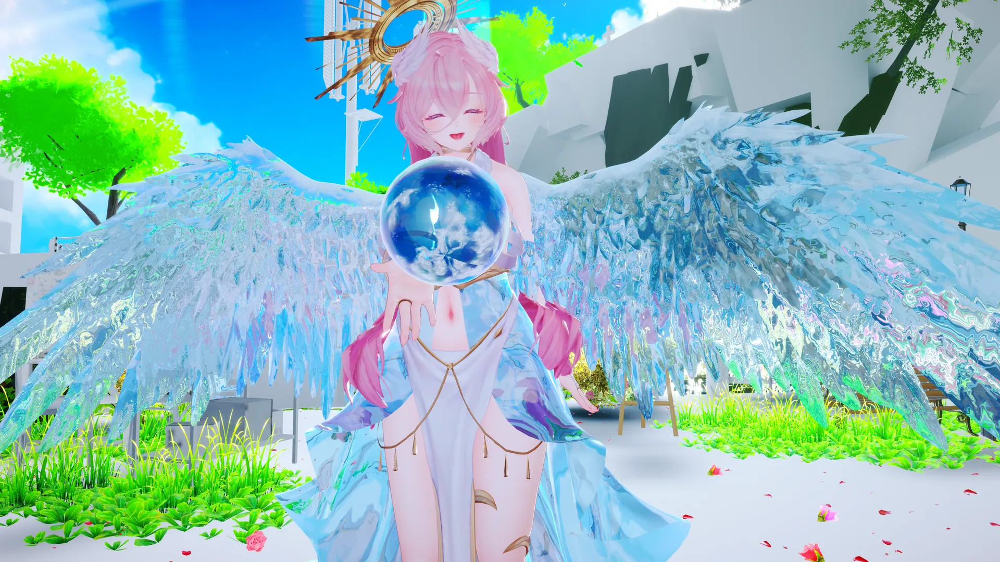

屈折
GrabPassで背景を取り込み、メッシュの形状とノーマルマップで歪ませる透明感。正面はほぼ素通しで、面が傾く縁ほどレンズのように強く湾曲します。
氷・深蒼凍・霜シェーダー
屈折・厚みの色吸収・フロスト・きらめきまで。氷の塊らしい奥行きと透明感を、ひとつのメッシュで表現するVRChatアバター向け氷シェーダー。

GrabPass屈折を土台に、色吸収・分散・フロスト・きらめき・ディゾルブまで。氷らしい見た目に必要な表現をひととおり備えています。
GrabPassで背景を取り込み、メッシュの形状とノーマルマップで歪ませる透明感。正面はほぼ素通しで、面が傾く縁ほどレンズのように強く湾曲します。
氷の内壁をうっすら描き込み、前面の屈折越しに歪んで透けて見えることで奥行きが出ます。入射面と射出面で2回歪む、実際のガラスと同じ構成です。
視線角から近似した厚みに応じて Deep Color へ指数減衰（Beer-Lambert近似）。薄い部分は無色透明、縁や厚い部分ほど深い色に沈みます。
視線角と氷面のノイズに応じて、薄い虹色のプリズムカラーを混ぜます。角度のついた面ほどプリズム感が出ます。
リフレクションプローブを拾う氷らしいテカり。縁が発光するようなリムライトで、氷のエッジを際立たせます。
REDSIM/VRCLightVolumes導入済みワールドのボリューム光を拾います。未対応環境では通常の見た目を維持します。
テクスチャマスクとプロシージャル粒子で、雪のような白濁・ざらつき・マットな受光を表現します。
Freeze Amountをアニメーションさせると、縁と結晶の濃い部分から霜が広がり、全体が凍りつきます（フリーズオーバー）。
Melt Amountで縁や薄い部分から霜が溶け、露出した氷面へ流れる疑似水膜の艶・法線・屈折が現れます。凍結と対の演出に。
上を向いた面ほど雪が積もったように霜が濃くなる表現。アクセサリや髪の上面に「降り積もった」感を足せます。
視線とライトの向きが合った瞬間だけ、丸い光点がゆらめきながら光る雪や霜の粉っぽいきらめき。淡い虹色チントで幻想的な瞬きに。
屈折時にRGBチャンネルごとに歪み量をずらし、プリズムのような色分離を表現（クロマティックアベレーション）。
逆光気味の光が氷内部を透過してきたような柔らかい滲みを表現します（Wrap Lighting近似）。
結晶状の広い凍結前線と受光する氷の割断面、細い青白い発光芯が先行し、その後を氷片状に欠けながら消えるアニメーション向け表現。

VRChat Avatar SDKを導入済みのUnityプロジェクトで、4ステップですぐに試せます。
Unityプロジェクト（VRChat Avatar SDK導入済み）に DeepFrostIce.shader をインポートします。
マテリアルを新規作成し、シェーダーに Nunifuchisaka/DeepFrostIceShader を選択します。
対象のメッシュ（アクセサリ等）にマテリアルを割り当てます。
まずはSphereなどのプリミティブで見た目を確認するのがおすすめです。
Editorメニューから、全機能をまとめて検証できるテストシーンを生成できます。Gameビュー左上のボタンで各機能を切り替えて確認します。
Unity標準のDirectional Lightの点灯切り替え。OFF時は環境光・反射強度も暗くなり、VRC Light Volumes単体の見え方を確認しやすくなります。
Directional Lightの向きを切り替えます。
Freeze Amountを切り替え、縁と結晶ノイズの濃い部分から霜が広がって全体が凍りつく様子を確認します。
霜の融解と、露出面へ現れる流れる疑似水膜を確認します。
Absorption Densityを切り替え、厚みに応じて縁・厚い部分ほど Deep Color に沈む様子を確認します（0では無色透明）。
Top Snow Amountを切り替え、球の上面ほど雪が積もったように霜が濃くなる様子を確認します。
Sparkle Intensityを切り替え、視線・ライト角度が合った瞬間だけ丸い光点がきらめく様子を確認します。
VRC Light Volumes由来の光（疑似的に動く色付きポイントライト）を確認します。
メイン以外の追加ライト（ForwardAddパス）による氷への映り込みを確認します。
遮蔽物による氷本体への影の落ち方（リアルタイムシャドウ受け）を確認します。
凍結前線・氷結晶の割断面・青白い発光芯が消失境界に先行し、その後を氷が欠けること、床の影は欠けた輪郭にだけ追従することを確認します。
Quest実機がなくても、VRCFallbackタグから近似したプレビュー用マテリアルに一時的に差し替えて確認できます（反射・屈折・霜のない平坦な見た目）。
マテリアルInspectorのプロパティ一覧です。各グループをクリックすると展開します。数値の目安や挙動はグループ末尾の補足を参照してください。
| プロパティ | 説明 |
|---|---|
| Ice Tint | 透けて見える背景に乗る色 |
| Deep Color | 縁や厚みのある部分の深い色 |
| Transmission | 透け具合（0=不透明寄り、1=よく透ける） |
| Refraction Strength | 背景の歪み量。面が傾いている縁ほど強く歪む（形状 + ノーマルマップ由来） |
| Absorption Density (thickness) | 視線角度から近似した厚みに応じてDeep Colorへ指数減衰させる強さ（Beer-Lambert近似）。0で無効、大きいほど厚い部分（縁）が早くDeep Colorに沈む |
| プロパティ | 説明 |
|---|---|
| Normal Map / Normal Strength | 表面の凹凸。屈折の歪みにも影響 |
| Smoothness | 反射のシャープさ |
| Reflection Intensity | 環境反射の強さ |
| Specular Intensity | ライトのハイライトの強さ |
| Dark Reflection Threshold | 周囲の明るさがこの値以下のとき、環境反射・リム・艶を暗くする |
| Dark Reflection Fade | 暗所から明所へ反射が戻るなだらかさ。大きいほどゆっくり戻る |
| プロパティ | 説明 |
|---|---|
| Backface Intensity | 氷の内側（裏面）の描き込みの濃さ。0で裏面描画を無効化、大きいほど内壁の色・霜・ハイライトがはっきり透ける |
裏面は専用のGrabPassで取り込んだ背景を Refraction Strength / Chromatic Aberration に従って屈折させたうえで内壁を重ね、その結果がさらに前面の屈折・色収差越しに歪んで見えます（入射面 + 射出面の2回屈折）。内壁の色は素の氷部分が Deep Color、霜の乗った部分が Frost Color に従います。
| プロパティ | 説明 |
|---|---|
| Use VRC Light Volumes | VRC Light Volumes由来の間接光・艶を使うか。未対応ワールドでは無効扱い |
| Light Volumes Diffuse Intensity | ボリューム光の拡散成分の強さ |
| Light Volumes Specular Intensity | ボリューム光のスペキュラ成分の強さ |
VRC Light Volumes対応ワールドで使う場合は、ワールド側に REDSIM/VRCLightVolumes が導入されている必要があります。アバター側のプロジェクトでMaterialエラーにならないよう、シェーダー参照用の LightVolumes.cginc を同梱しています。同梱ファイルは REDSIM/VRCLightVolumes 由来のMITライセンスコードです。
| プロパティ | 説明 |
|---|---|
| Fresnel Color / Power / Intensity | 縁の発光っぽいリム。Powerが大きいほど縁だけに出る |
| プロパティ | 説明 |
|---|---|
| Frost Mask (R) | 霜のマスク（白=霜）。黒テクスチャで霜なし |
| Frost Color | 霜の基本色 |
| Frost Coverage | テクスチャなしで出すプロシージャル霜の広がり。0で無効 |
| Frost Intensity | 霜全体の強さ |
| Frost Grain Scale | 霜の大きな粒状ノイズの細かさ |
| Frost Crystal Scale | 霜の細かな粉・粒状結晶の細かさ |
| Frost Edge Bias | フレネル縁に霜を寄せる強さ。小さいほど縁に広がりやすい |
| Frost Normal Strength | 霜による細かな凹凸の強さ |
| Frost Roughness | 霜で反射・艶を消す強さ。1で雪のようなマット表現 |
| Frost Light Volumes Intensity | VRC Light Volumes由来の光が霜に乗る強さ |
| Freeze Amount | 凍結の進行度。0で通常の霜設定のまま、1で全面が霜に覆われる |
| Freeze Edge Width | 凍結が進む境界のなだらかさ。大きいほど広い範囲がじわっと凍る |
Frost Coverage を上げると、マスクテクスチャなしでもノイズ状の霜が乗ります。Frost Mask (R) を使う場合は、白い部分に確実に霜を出しつつ、Frost Coverage で縁や粒を追加できます。Freeze Amount をアニメーションさせると、フレネルの縁と結晶ノイズの濃い部分から霜が広がり、最終的に全体が凍りつく演出になります。凍りついた部分の霜の濃さは Frost Intensity に従います。Dissolve Amount と組み合わせると「凍りついてから砕け散る」演出も作れます。
| プロパティ | 説明 |
|---|---|
| Melt Amount | 融解の進行度。0で通常の霜設定のまま、1で霜が完全に溶けてなくなる |
| Melt Edge Width | 融解が進む境界のなだらかさ。大きいほど広い範囲がじわっと溶ける |
| Melt Water Film | 融けて露出した氷面へ現れる疑似水膜の強さ。0で従来どおり |
| Water Film Normal Strength | 水膜によるゆるい表面凹凸の強さ |
| Water Film Scale | 水膜ノイズの細かさ |
| Water Film Flow Speed | 水膜ノイズが流れる速度。0で静止 |
| Melt Smoothness Boost | 水膜部分に追加するSmoothness |
| Melt Refraction Boost | 水膜部分に追加する屈折量 |
Melt Amount はテクスチャマスク・Frost Coverage・Freeze Amount・Top Snow Amount のいずれで乗った霜にも一律にかかる侵食で、Freeze Amount とは逆にフレネルの縁や結晶ノイズの薄い部分から先に溶け、密な結晶部分ほど最後まで残ります。Melt Water Film を上げると、融解量と露出面に応じて低周波ノイズが2方向へ流れ、Smoothness・法線・屈折が増した薄い水膜として見えます。0では追加計算を省略し、従来の見た目を維持します。
| プロパティ | 説明 |
|---|---|
| Top Snow Amount | 上面の雪の濃さ。0で無効 |
| Top Snow Angle | 雪が乗る許容角度（度）。真上からの傾きがこの角度以内の面まで雪が広がる |
| Top Snow Edge Softness | 雪が乗る/乗らない境界のなだらかさ |
| Top Snow Noise Influence | 結晶ノイズによる境界の荒れ具合。大きいほど直線的でなく粉雪っぽいムラが出る |
ワールド空間法線の上方向成分（Y成分）を見て、上を向いた面ほど濃く霜が乗るマスクを既存の frost に加算する表現です。Frost Coverage や Freeze Amount と重ねても問題なく、いずれも同じ frost 値に合成されるため艶消し・スペキュラ減衰などの見た目も自動的にそろいます。
| プロパティ | 説明 |
|---|---|
| Sparkle Intensity | きらめきの強さ。0で無効 |
| Sparkle Color | きらめきの色 |
| Sparkle Scale | ファセット（きらめきの粒）の細かさ |
| Sparkle Density | きらめく粒の間引き具合。小さいほどまばらに、大きいほど密に光る |
| Sparkle Sharpness | 光る瞬間の絞り。大きいほど視線・ライト角度がぴったり合った時だけ細く強く光る |
| Sparkle Size | 光点ひとつひとつの大きさ |
| Sparkle Rainbow | 淡い虹色チントの強さ。0で白のみ、上げるほど粒ごとにパステル調の色が付く |
| Sparkle Twinkle Speed | 時間によるゆらめき（瞬き）の速さ。0でゆらめきなし（粒ごとの明るさの揺らぎのみ） |
| Sparkle Frost Bias | 霜の濃い部分に寄せる強さ。0で霜の有無に関わらず均等、1で霜の濃い部分にのみ出る |
カメラや光源が動くとチラチラと明滅し、静止していても Sparkle Twinkle Speed の位相ゆらぎで粒がゆっくり瞬きます。Frost Coverage や Freeze Amount と組み合わせると、雪や霜の粉がきらめく表現になります。Sparkle Rainbow を上げるとダイヤモンドダストのようなプリズム調の瞬きになります。
| プロパティ | 説明 |
|---|---|
| Chromatic Aberration | 屈折のRGBずれ量。0で通常の屈折、大きいほどプリズムのような色分離が強くなる |
| プロパティ | 説明 |
|---|---|
| Dispersion Intensity | 虹色の混ざり具合。0で無効、大きいほどプリズム感が強くなる |
| Dispersion Facet Scale | 虹色が出る面の細かさ。大きいほど細かい色ムラになる |
| Dispersion Sharpness | 虹色の出方の絞り。大きいほど縁や角度のついた面にだけ出る |
| プロパティ | 説明 |
|---|---|
| SSS Color | 内部透過光の色 |
| SSS Power | 滲みの絞り具合。大きいほど逆光時のみ細く強く出る |
| SSS Distortion | 法線による滲みの歪み量。表面の凹凸に沿って透過光がにじむ |
| SSS Scale | 滲みの強さの倍率 |
| SSS Intensity | 全体の強さ。Transmissionと霜（Frost）の量に応じて減衰する |
| Back Light Transmission | 通常ライトが氷を貫通して反対側を明るくする強さ。0で無効 |
| Light Edge Transmission | 光が当たる面から当たらない面へなじませる透過光の強さ |
| Light Edge Width | 明暗境界と透過光の回り込みをなじませる広さ。大きいほど線になりにくい |
| プロパティ | 説明 |
|---|---|
| Dissolve Amount | 消失の進行度。0で表示、1で完全に消える |
| Dissolve Mask (R) | 消える順番を決めるマスク。Rチャンネルが暗い部分から先に消える |
| Dissolve Ice Grain Scale | 内蔵の氷片ノイズの細かさ |
| Dissolve Ice Grain Blend | マスクと端から砕けるDissolveの混ぜ具合。0でマスク優先、1で端から砕ける進行を優先。マスク未指定なら1推奨 |
| Dissolve Direction (XY) | 消え始める向き。(0, 1) でUV下端から上へ、(1, 0) でUV左端から右へ進む |
| Dissolve Broken Edge | 消え際の砕け具合。大きいほど端の境界が荒く欠ける |
| Dissolve Edge Width | 消失境界に出る細い発光芯の幅。結晶霜の凍結前線はこの約3倍の幅で先行する |
| Dissolve Edge Color | 消失境界の細い発光芯に足す氷光の色 |
| Dissolve Edge Intensity | 消失境界の細い発光芯の強さ |
| Dissolve Edge Frost | 消失境界の手前に広がる結晶状の凍結前線へ霜を足す量 |
| Dissolve Crystal Section | 消失境界を不規則な三角結晶面で構成された氷の割断面として見せる強さ。0で無効、1で最も強く表示 |
Dissolve Amount をアニメーションさせることで、肌やアクセサリの表面を結晶状の霜が先に凍らせ、受光方向によって面ごとの明暗が変わる氷結晶の割断面と細い青白い芯を境に、氷片のように砕けながら消える演出に使えます。広い凍結前線は霜と同じ結晶ノイズで白濁・マット化し、割断面は Dissolve Ice Grain Scale に応じた不規則な三角セルで背景を遮り、発光は境界の細い芯だけに絞っています。lilToonのDissolve設定を再現するのではなく、このシェーダーの氷表現に合わせた独自仕様です。
最後が一気に消える場合は、Dissolve Ice Grain Blend を1に近づけるか、Dissolve Broken Edge を少し下げると終端の残り方がなだらかになります。
屈折系シェーダー共通の制約と、ライティング対応の範囲です。導入前に確認してください。
VRChatの仕様上、Quest（Android）アバターは公式の VRChat/Mobile 系シェーダーしか使えないため、カスタムシェーダーはQuest側では表示されません。既定ではQuest側は非表示（Hidden）になります。
GrabPass/屈折に依存する見た目はQuest側の代替では再現できないため、中途半端な近似より非表示を選んでいます。マテリアルInspector下部の「Quest（モバイル）用フォールバック」から、マテリアルごとに Standard Lite 相当など別の VRChat/Mobile 系シェーダーへ変更することもできます。
GrabPassを使用しているため、アバターのパフォーマンスランクは Poor 以下 になります（屈折系シェーダー共通の仕様）。
GrabPassは名前なしのため、使うオブジェクトごとに画面キャプチャが走ります。裏面用と前面用で1オブジェクトあたり2回のキャプチャになります（Backface Intensity = 0 でもピクセル処理は省かれますが、キャプチャ自体は残ります）。
メインのDirectional Light以外にPoint/Spot Lightなどの追加リアルタイムライトが当たる場合、それらを反映する ForwardAdd パスがライトの数だけ追加描画されます。ライトの多いワールドではその分描画コストが増えます。
Dissolve Crystal Section はDissolve中だけ結晶セルと仮想断面法線を計算し、追加ライトごとにも受光を再計算します。断面が不要なら0にすると省略できます。
メインのDirectional Lightからのリアルタイムシャドウを受けます（他オブジェクトの影に入ると暗くなります）。グレイシャーディゾルブで氷が欠けている間は、キャストする影もその形状に合わせて欠けます。
メイン以外のPoint/Spot Lightなどの追加リアルタイムライトにも反応します（スペキュラ・霜の受光・内部散乱）。ただし追加ライトからのリアルタイム影には非対応です。